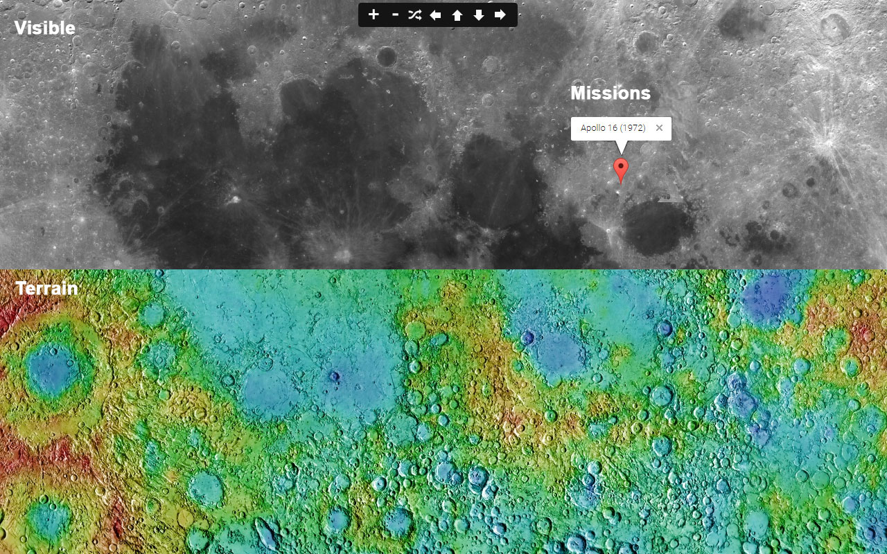

Installed Plugin Version:
Google Maps JavaScript API
Moon 3D Map allows you to view Moon landscape in a new way.
The Moon is in synchronous rotation with Earth, always showing the same face with its near side marked by dark volcanic maria that fill between the bright ancient crustal highlands and the prominent impact craters. It is the second-brightest regularly visible celestial object in Earth's sky (after the Sun), as measured by illuminance on the surface of Earth. Although it can appear a very bright white, its surface is actually dark, with a reflectance just slightly higher than that of worn asphalt. Its prominence in the sky and its regular cycle of phases have, since ancient times, made the Moon an important cultural influence on language, calendars, art, and mythology. The Moon's gravitational influence produces the ocean tides and the slight lengthening of the day. The Moon's current orbital distance is about thirty times the diameter of Earth, causing it to have an apparent size in the sky almost the same as that of the Sun. This allows the Moon to cover the Sun nearly precisely in total solar eclipse. This matching of apparent visual size is a coincidence.
Source: Wikipedia

Screenshot of Moon 3D Map's website
Screenshot of Moon 3D Map's website
Google Maps API is used in this project.
The Google Maps plug-in allows you to navigate and explore Moon geographic data using a web browser.
Easy Navigation
Use the new navigation panel to zoom in and zoom out or just press the random button to find a new amazing place.
New interesting places on the map
A drop down menu with a list of interesting places will help you to find where they are.
Still to come are list with popular places on the moon like mountains, landing places and more.
Copyright of Overlays is
Lunar and Planetary Institute